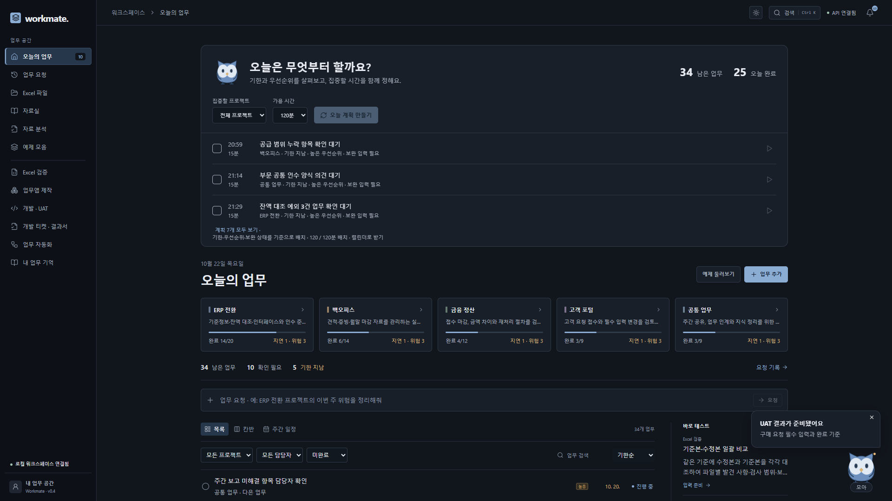
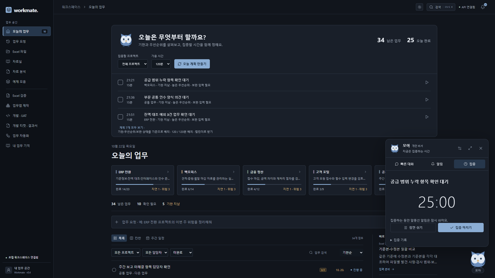
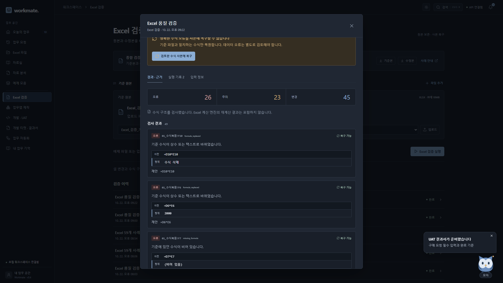
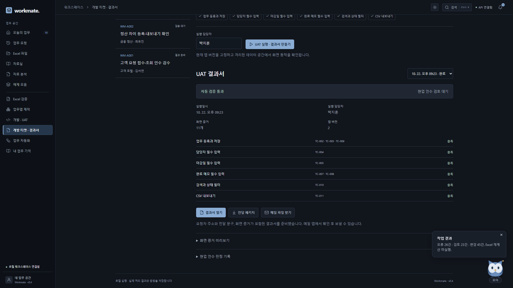
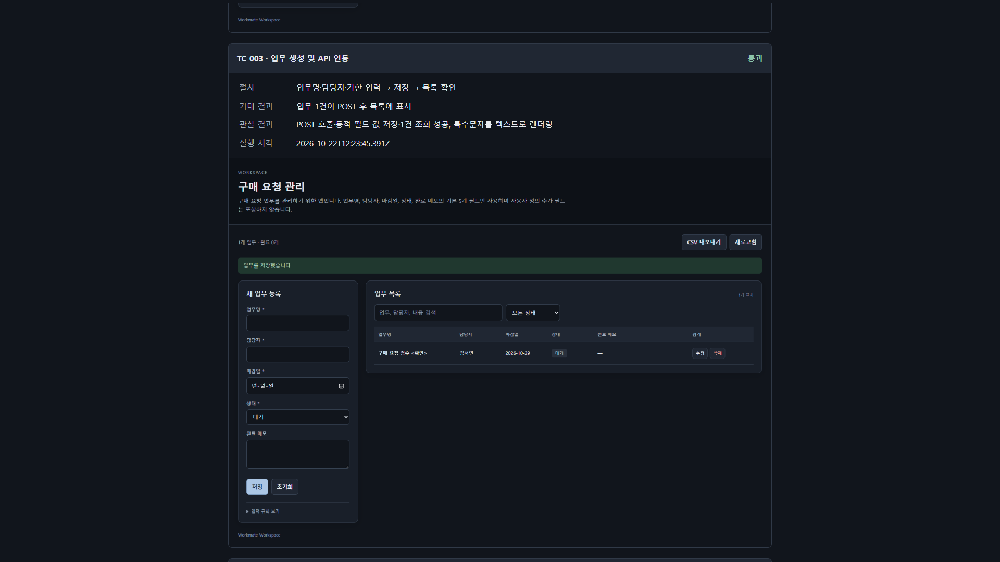
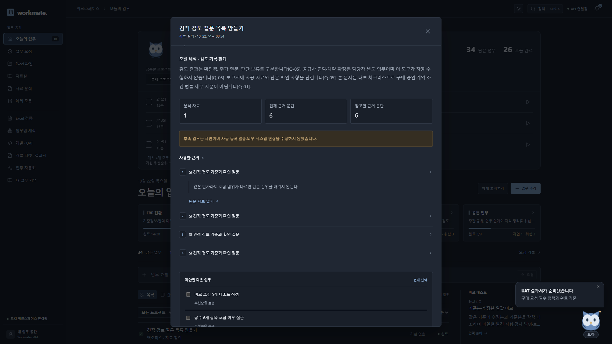
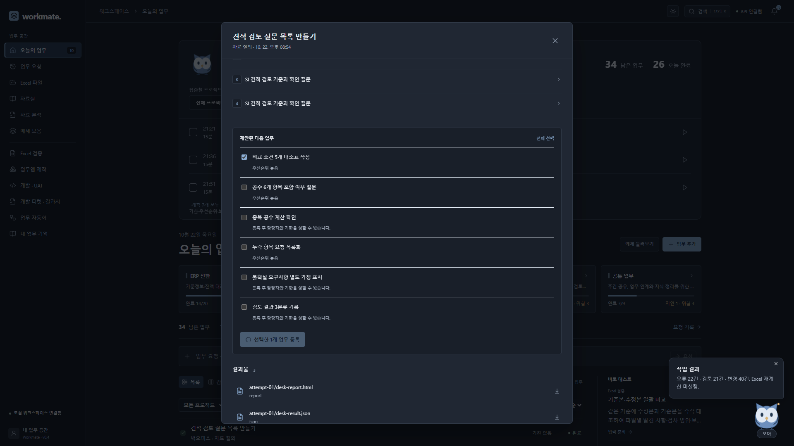

말해 두면, 다음 요청에 반영
업무 선호와 맥락을 기억합니다. 저장한 기억은 직접 고치거나 삭제할 수 있습니다.
YOUR PERSONAL WORKSPACE
해야 할 일, 흩어진 자료, 확인할 결과까지.
Workmate는 업무의 맥락을 기억하고
다음 행동을 함께 챙기는 개인 비서입니다.

기한과 진행 상황을 살펴 다음 행동을 고릅니다.
수식 변경, 문서 원문, 화면 결과를 함께 봅니다.
요구사항부터 현업의 인수 검토까지 연결합니다.
오른쪽 아래의 모아를 열고 바로 요청하세요. 업무를 기억하고, 확인할 내용을 말풍선으로 알립니다. 웹의 작은 창과 독립 Windows Mini에서 대화를 이어갑니다.


업무 선호와 맥락을 기억합니다. 저장한 기억은 직접 고치거나 삭제할 수 있습니다.
프로젝트와 가용 시간을 선택하면 업무를 시간 블록으로 배치합니다. 캘린더 파일로도 받습니다.
집중 시작·일시 정지·재개와 기록을 제공합니다. 알림은 읽음 처리하거나 잠시 미룰 수 있습니다.
기준본과 수정본을 비교해 수식의 누락·상수화·깨진 참조, 입력 오류와 규칙 변경을 찾아냅니다. 발견한 셀의 이전 값, 현재 값, 이유를 나란히 확인합니다.

제공 파일을 실제 비교한 결과입니다. 복원 후 다시 검사해 남은 오류 22건과 주의 21건을 확인했고, 원본 두 파일의 해시가 유지되는 것도 확인했습니다.
개발 티켓의 요구사항과 요청자를 연결합니다. 현재 앱에서 검증 항목을 실행하고 화면을 자동 캡처해, 담당자와 실행 날짜가 담긴 UAT 결과서로 묶습니다.


티켓, 요청자, 개발 담당자, 실행 담당자, 실행 시각, 앱 버전과 소스 해시를 함께 보관합니다.
항목별 절차와 기대·실제 결과, 판정과 화면 증거를 정해진 양식에 자동으로 넣습니다.
결과서 HTML, 화면 PNG, ZIP과 첨부 메일 파일을 만듭니다. 메일 앱에서 확인 후 전달합니다.
프로젝트 자료의 원문을 확인하며 질문하고, 문서 변경의 영향을 비교합니다. 필요한 후속 업무만 선택해 등록하고, 저장된 업무 기록으로 보고서를 준비합니다.


대화, 기억, 파일, 작업 상태와 결과물을 공유합니다. 자연어 요청은 중앙 분류를 거쳐 역할별 실행으로 이어지고, 기능 화면에서는 직접 실행할 수 있습니다.
빠른 요청, 기억, 브리핑, 우선순위와 집중 시간을 한곳에서 관리합니다.
수식·입력·변경을 비교하고, 검토한 수식을 사본에 복원합니다.
자연어 설명을 입력 항목과 규칙으로 바꾸고, 저장되는 업무앱을 만듭니다.
지원 규칙의 코드 변경과 리뷰를 거쳐 화면 검증·증거·결과서를 남깁니다.
파일 검사에서 보완 대기, 결과 등록까지 같은 흐름으로 재개합니다.
프로젝트 문서를 읽고 답변에 사용한 원문 문단을 연결합니다.
두 문서의 변경을 비교하고 영향과 후속 업무를 정리합니다.
저장된 작업을 바탕으로 주간보고, 인수인계, 회의 준비를 돕습니다.
중앙 LLM의 분류·계획과 역할별 실행기를 결합한 구조입니다. Excel은 결정적 검사 규칙, 자동화는 검사 → 보완 대기 → 등록 절차를 사용합니다. 앱 제작과 변경은 구조화된 계획과 검증된 CRUD 템플릿을 사용합니다. 모든 역할이 독립적인 범용 ReAct 루프를 수행하는 구조는 아닙니다.
설치형은 로컬 개인 워크스페이스이며 Windows Mini는 브라우저와 독립적으로 동작합니다. 온라인용 서버는 방문자별 데이터·파일·API 연결을 분리합니다. 계획은 가용 시간 안의 규칙 기반 배치이며, 캘린더 가져오기용 ICS 파일을 제공합니다. UAT는 이 플랫폼에서 만든 업무앱과 지원 검증 기준을 대상으로 합니다. 외부 ERP, 회사 메일함·캘린더와의 실시간 연동을 전제로 하지 않습니다.
빠른 호출과 집중 흐름, 우선순위와 시간 배치, 티켓과 인수 기준의 연결을 참고해 구현했습니다. 아래 제품과의 제휴 또는 제품 연동을 의미하지 않습니다. 확인일 2026.10.22.
Raycast Focus ↗Motion Task Manager ↗Atlassian 작업 항목과 에이전트 ↗European Commission PM² 산출물 ↗UAT 양식은 PM²의 산출물 인수·점검 구조를 참고해 Workmate의 실행 정보와 화면 증거에 맞게 작성했습니다.
온라인 워크스페이스에서 Excel 검사, 업무 관리, 티켓 UAT를 바로 실행하세요. 자연어 비서를 사용하려면 상단 연결 배지에서 개인 API 주소·키·모델을 연결합니다.
무료 호스팅은 일정 시간 이용하지 않으면 쉬었다가 다시 시작해 첫 접속이 늦어질 수 있습니다. 방문 세션은 비활성 1시간 후 정리되며, 서버 재시작·재배포 시 데이터와 API 연결이 초기화될 수 있습니다. 필요한 산출물은 내려받으세요. 개인 API 사용료는 연결한 제공자의 정책에 따릅니다.
Windows용 Workmate Mini가 바탕화면과 트레이에 머뭅니다. 작은 모아를 누르거나 Ctrl + Alt + Space로 대화창을 열어 바로 요청하세요.
상단 점을 끌어 위치를 바꾸고, 항상 위 표시를 켜거나 끕니다. 대화창을 닫으면 트레이에 남고, 트레이 메뉴에서 완전히 종료합니다.
확인할 업무는 작은 말풍선으로 표시합니다. 집중 시간과 알림 쉬기 설정을 함께 적용하며, 알림이 다른 창의 입력을 가로채지 않습니다.
설정에서 Windows 로그인 시 시작을 켤 수 있습니다. 서버가 실행 중이면 연결하고, 꺼져 있으면 Mini가 로컬 서버를 함께 시작합니다.


설치형 Mini는 이 PC의 워크스페이스에 연결합니다. Windows가 꺼져 있거나 Mini와 서버가 모두 종료된 동안에는 작업이 실행되지 않습니다. 다른 PC에서는 Python과 업무앱 실행 의존성을 먼저 준비하세요.
독립 앱의 실제 대화, 집중할 업무, 항상 위 표시와 알림 설정을 확인하세요.
오늘 계획과 모아의 대화에서 시작해 Excel 검수, 티켓 UAT, 원문 근거와 후속 업무까지. 한국어 자막을 영상에 함께 넣었습니다.
개인 API를 연결하고 한곳에서 요청·실행·확인을 이어가세요.